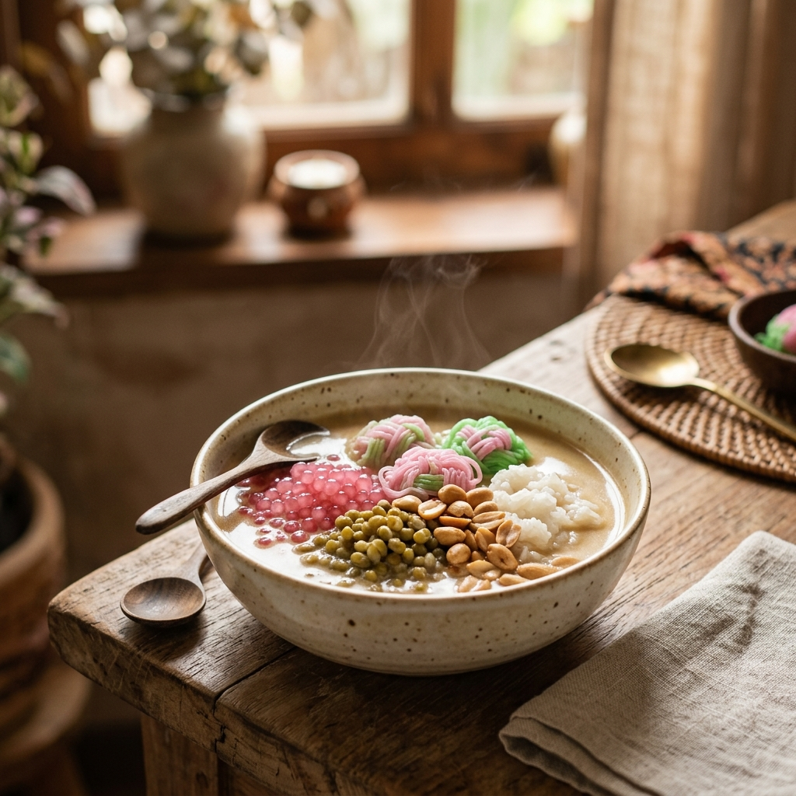
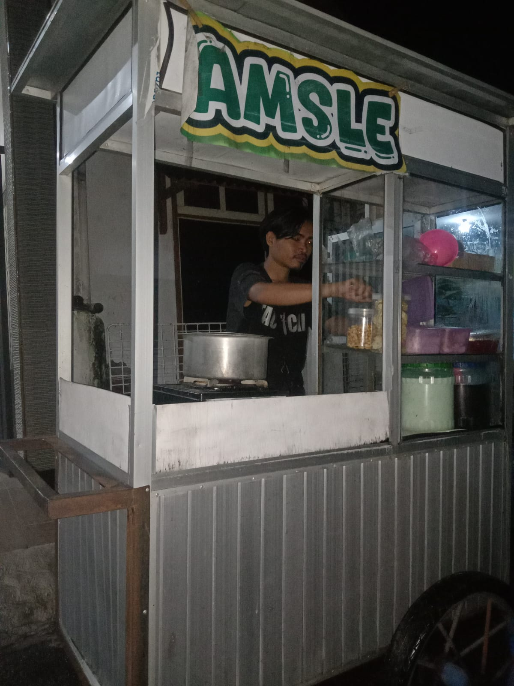
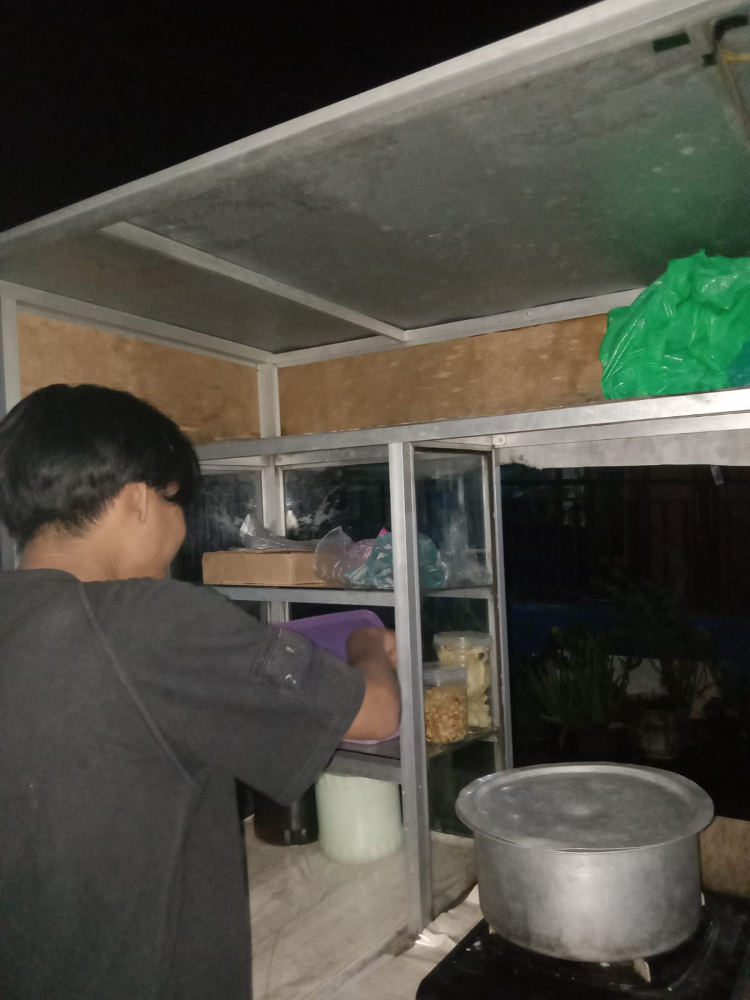
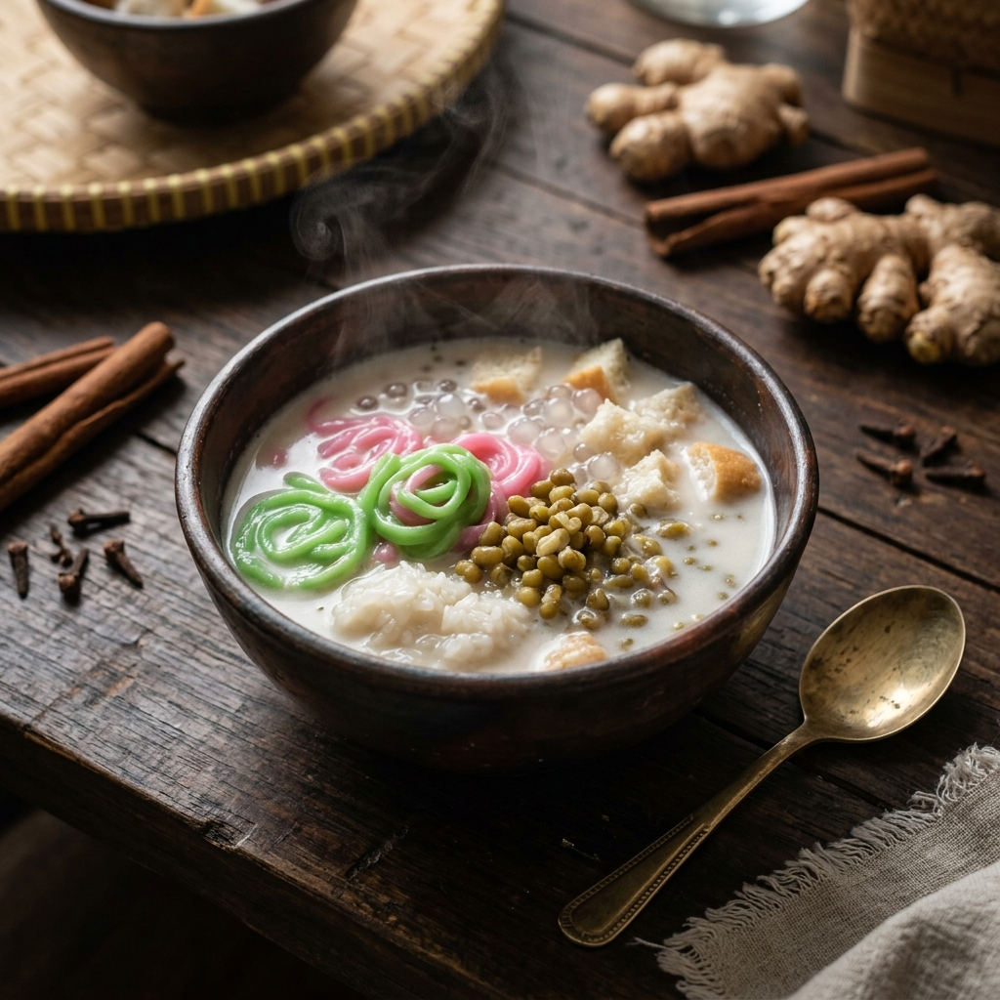
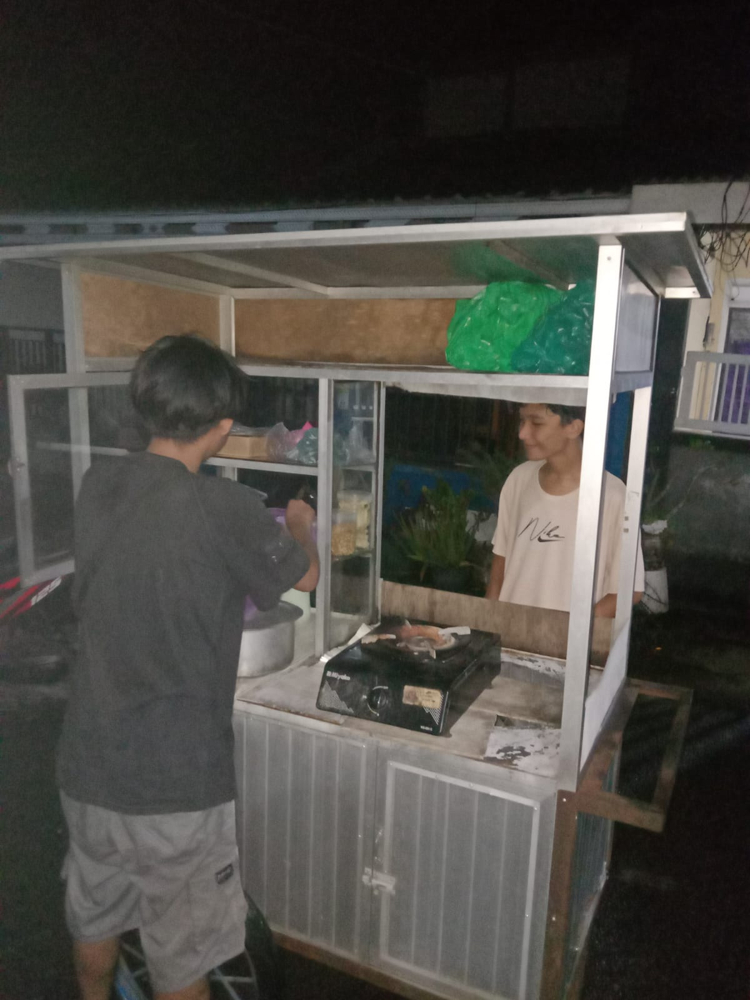

Amsle Mas Budi
Kehangatan
Tradisi dalam
Semangkuk
Amsle.
Menghadirkan kembali memori klasik melalui wedang Amsle dengan perpaduan kuah santan hangat beraoma jahe dan isian rempah Nusantara.



Melestarikan
Resep Klasik
Nusantara.
Amsle atau wedang Amsle adalah kebanggaan kuliner Jawa Timur, khususnya Malang. Kami menyajikannya persis seperti resep leluhur—menyerupai kolak gurih dengan kuah santan hangat beraroma jahe yang khas dan melegakan.
Setiap mangkuk Amsle berisi harmoni rasa dan tekstur: petulo yang lembut, kacang hijau bergizi, ketan putih punel, sagu mutiara, dan diakhiri dengan kerenyahan kacang tanah sangrai.
Menu Amsle

Amsle Klasik.
Resep original warisan: kuah santan jahe hangat yang menenangkan, berpadu dengan petulo lembut, sagu mutiara, ketan putih punel, kacang hijau bergizi, roti tawar, dan diakhiri taburan kacang tanah sangrai yang renyah.
Ritual di Balik Kehangatan .
Bukan sekadar minuman, setiap mangkok Amsle adalah hasil dari dedikasi terhadap detail dan bahan yang dipilih dengan hati.
Kurasi Bahan
Kami hanya menggunakan jahe emprit pilihan dan gula aren asli dari petani lokal untuk memastikan kualitas rasa yang tidak berubah sejak dahulu kala.
Kemurnian Santan
Santan murni perasan pertama adalah kunci gurihnya Amsle. Diperas segar setiap hari tanpa campuran bahan pengawet sedikit pun.
Sentuhan Akhir
Penyajian dalam keadaan panas adalah janji kami. Kehangatan yang meresap ke dalam tubuh, melegakan tenggorokan di setiap tegukan.

Siap Menikmati Kehangatan Malam Ini?
Kunjungi kedai kami di alun-alun atau pesan online untuk menikmati semangkuk amsle hangat langsung di rumah Anda.